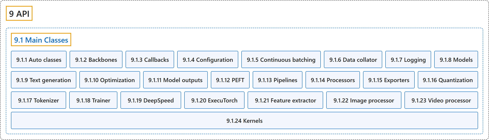

9.1 Main Classes
Classification

Glossary
| Term | Definition | 中文翻译 | Source |
|---|---|---|---|
| 9.1 Main Classes 主要类 |
(context) "Fast and easy to use: Every model is implemented from only three main classes (configuration, model, and preprocessor) and can be quickly used for inference or training with Pipeline or Trainer." | （语境）快速易用：每个模型的实现都只用到三个主要类（配置、模型和预处理器），并能借助 Pipeline 或 Trainer 快速用于推理或训练。 | Hugging Face, n.d., "Design", item 1 |
| 9.1.1 Auto classes 自动类 |
(context) "In many cases, the architecture you want to use can be guessed from the name or the path of the pretrained model you are supplying to the from_pretrained() method. AutoClasses are here to do this job for you so that you automatically retrieve the relevant model given the name/path to the pretrained weights/config/vocabulary." |
（语境）很多情况下，你要用的架构可以从你传给 from_pretrained() 方法的预训练模型的名称或路径猜出来。AutoClasses 替你完成这件事，让你根据预训练权重、配置或词表的名称或路径自动取得相应的模型。 |
Hugging Face, n.d., "Auto classes", para. 1 |
| 9.1.2 Backbones 骨干网络 |
"A backbone is a model used for feature extraction for higher level computer vision tasks such as object detection and image classification." | 骨干网络是一种用于特征提取的模型，服务于目标检测、图像分类等更高层的计算机视觉任务。 | Hugging Face, n.d., "Backbone", para. 1 |
| 9.1.3 Callbacks 回调 |
"Callbacks are objects that can customize the behavior of the training loop in the PyTorch Trainer that can inspect the training loop state (for progress reporting, logging on TensorBoard or other ML platforms…) and take decisions (like early stopping)." | 回调是可以定制 PyTorch Trainer 中训练循环行为的对象，它们能检查训练循环的状态（用于进度报告、在 TensorBoard 或其他机器学习平台上记录日志……）并作出决定（如提前停止）。 | Hugging Face, n.d., "Callbacks", para. 1 |
| 9.1.4 Configuration 配置 |
(context) "The base class PreTrainedConfig implements the common methods for loading/saving a configuration either from a local file or directory, or from a pretrained model configuration provided by the library (downloaded from HuggingFace’s AWS S3 repository)." | （语境）基类 PreTrainedConfig 实现了加载和保存配置的通用方法，配置可以来自本地文件或目录，也可以来自库提供的预训练模型配置（从 HuggingFace 的 AWS S3 仓库下载）。 | Hugging Face, n.d., "Configuration", para. 1 |
| 9.1.5 Continuous batching 连续批处理 |
(context) "This page documents the classes behind continuous batching inference: submitting prompts, configuring scheduling and memory limits, and retrieving results." | （语境）本页说明连续批处理推理背后的类：提交提示、配置调度和内存限制、取回结果。 | Hugging Face, n.d., "Continuous batching", para. 1 |
| 9.1.6 Data collator 数据整理器 |
"Data collators are objects that will form a batch by using a list of dataset elements as input." | 数据整理器是以一组数据集元素作为输入、把它们组成一个批次的对象。 | Hugging Face, n.d., "Data collator", para. 1 |
| 9.1.7 Logging 日志 |
"🤗 Transformers has a centralized logging system, so that you can setup the verbosity of the library easily." | 🤗 Transformers 有一个集中式的日志系统，让你可以方便地设置库的日志详细程度。 | Hugging Face, n.d., "Logging", para. 1 |
| 9.1.8 Models 模型 |
(context) "The base class PreTrainedModel implements the common methods for loading/saving a model either from a local file or directory, or from a pretrained model configuration provided by the library (downloaded from HuggingFace's Hub)." |
（语境）基类 PreTrainedModel 实现了加载和保存模型的通用方法，模型可以来自本地文件或目录，也可以来自库提供的预训练模型配置（从 HuggingFace 的 Hub 下载）。 |
Hugging Face, n.d., "Models", para. 1 |
| 9.1.9 Text generation 文本生成 |
(context) "Each framework has a generate method for text generation implemented in their respective GenerationMixin class:" |
（语境）每个框架都有一个用于文本生成的 generate 方法，实现在各自的 GenerationMixin 类中： |
Hugging Face, n.d., "Generation", para. 1 |
| 9.1.10 Optimization 优化 |
(context) "The .optimization module provides: an optimizer with weight decay fixed that can be used to fine-tuned models, and several schedules in the form of schedule objects that inherit from _LRSchedule:" |
（语境）.optimization 模块提供：一个修正了权重衰减、可用于微调模型的优化器，以及若干以调度对象形式提供的学习率调度，它们继承自 _LRSchedule： |
Hugging Face, n.d., "Optimization", para. 1 and list items 1 to 2 |
| 9.1.11 Model outputs 模型输出 |
"All models have outputs that are instances of subclasses of ModelOutput. Those are data structures containing all the information returned by the model, but that can also be used as tuples or dictionaries." | 所有模型的输出都是 ModelOutput 子类的实例。它们是包含模型返回的全部信息的数据结构，但也可以当作元组或字典使用。 | Hugging Face, n.d., "Model outputs", para. 1 |
| 9.1.12 PEFT 参数高效微调 |
(context) "The PeftAdapterMixin provides functions from the PEFT library for managing adapters with Transformers." | （语境）PeftAdapterMixin 提供来自 PEFT 库的函数，用于在 Transformers 中管理适配器。 | Hugging Face, n.d., "PEFT", para. 1 |
| 9.1.13 Pipelines 管道 |
"The pipelines are a great and easy way to use models for inference." | 管道是一种很好用、很简单的用模型做推理的方式。 | Hugging Face, n.d., "Pipelines", para. 1 |
| 9.1.14 Processors 处理器 |
"Any multi-modal model will require an object to encode or decode the data that groups several modalities (among text, vision and audio). This is handled by objects called processors, which group together two or more processing objects such as tokenizers (for the text modality), image processors (for vision) and feature extractors (for audio)." | 任何多模态模型都需要一个对象，来编码或解码组合了多种模态（文本、视觉和音频中的几种）的数据。这由称为处理器的对象负责，它把两个或更多处理对象组合在一起，如分词器（文本模态）、图像处理器（视觉）和特征提取器（音频）。 | Hugging Face, n.d., "Processors", "Multi-modal processors", para. 1 |
| 9.1.15 Exporters 导出器 |
(context) "New export backends can be added to Transformers by subclassing HfExporter." |
（语境）可以通过继承 HfExporter 给 Transformers 添加新的导出后端。 |
Hugging Face, n.d., "Exporters", para. 1 |
| 9.1.16 Quantization 量化 |
"Quantization techniques reduce memory and computational costs by representing weights and activations with lower-precision data types like 8-bit integers (int8)." | 量化技术用更低精度的数据类型表示权重和激活值，从而降低内存和计算成本，如 8 位整数（int8）。 | Hugging Face, n.d., "Quantization", para. 1 |
| 9.1.17 Tokenizer 分词器 |
"A tokenizer is in charge of preparing the inputs for a model." | 分词器负责为模型准备输入。 | Hugging Face, n.d., "Tokenizer", para. 1 |
| 9.1.18 Trainer 训练器 |
"The Trainer class provides an API for feature-complete training in PyTorch, and it supports distributed training on multiple GPUs/TPUs, mixed precision for NVIDIA GPUs, AMD GPUs, and torch.amp for PyTorch." |
Trainer 类提供一个在 PyTorch 中进行功能完整训练的 API，它支持在多个 GPU 或 TPU 上的分布式训练，以及面向 NVIDIA GPU、AMD GPU 的混合精度和 PyTorch 的 torch.amp。 |
Hugging Face, n.d., "Trainer", para. 1 |
| 9.1.19 DeepSpeed DeepSpeed |
"DeepSpeed, powered by Zero Redundancy Optimizer (ZeRO), is an optimization library for training and fitting very large models onto a GPU." | DeepSpeed 以零冗余优化器（ZeRO）为核心，是一个用于在 GPU 上训练和容纳超大模型的优化库。 | Hugging Face, n.d., "DeepSpeed", para. 1 |
| 9.1.20 ExecuTorch ExecuTorch |
"ExecuTorch is an end-to-end solution for enabling on-device inference capabilities across mobile and edge devices including wearables, embedded devices and microcontrollers." |
ExecuTorch 是一个端到端的解决方案，让移动设备和边缘设备具备在设备上推理的能力，包括可穿戴设备、嵌入式设备和微控制器。 |
Hugging Face, n.d., "ExecuTorch", para. 1 |
| 9.1.21 Feature extractor 特征提取器 |
"A feature extractor is in charge of preparing input features for audio models." | 特征提取器负责为音频模型准备输入特征。 | Hugging Face, n.d., "Feature extractor", para. 1 |
| 9.1.22 Image processor 图像处理器 |
"An image processor is in charge of loading images (optionally), preparing input features for vision models and post processing their outputs." | 图像处理器负责加载图像（可选）、为视觉模型准备输入特征，并对其输出做后处理。 | Hugging Face, n.d., "Image processor", para. 1 |
| 9.1.23 Video processor 视频处理器 |
"A Video Processor is a utility responsible for preparing input features for video models, as well as handling the post-processing of their outputs." | 视频处理器是一个工具，负责为视频模型准备输入特征，并处理其输出的后处理。 | Hugging Face, n.d., "Video processor", para. 1 |
| 9.1.24 Kernels 内核 |
(context) "This page documents the kernels configuration utilities." | （语境）本页说明内核配置工具。 | Hugging Face, n.d., "Kernels", para. 1 |
References
Hugging Face. (n.d.). Transformers documentation (Version 5.20.2). Retrieved October 30, 2026, from https://huggingface.co/docs/transformers/v5.20.2/en/index